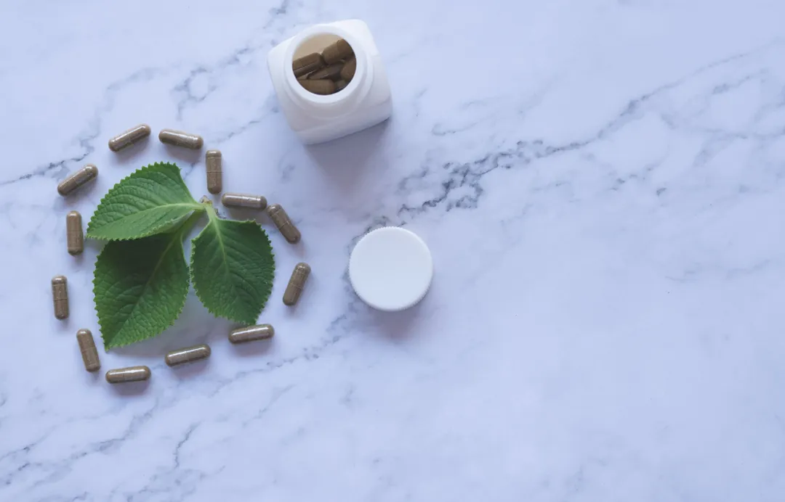

Dhanyamla Dhara in Patna

Most of the dhara therapies people know involve oil. Dhanyamla dhara is different. The liquid is sour, slightly fizzy and smells of fermentation, a little like a mild homemade kanji. It is poured warm over the body for exactly the patients who would feel heavier, not better, after oil: those with swelling, stiffness, heaviness and sluggish digestion. It is a good example of how Ayurveda chooses the opposite of the problem.
What dhanyamla means
Dhanya (धान्य) means grain, and amla (अम्ल) means sour. Dhanyamla is a sour fermented liquid made from grains. Dhara (धारा) means a continuous stream. Dhanyamla dhara is the pouring of this warm fermented liquid over the body. It is also called kanji dhara in some places.
Origins and history
The classical texts describe dhanyamla and related fermented sour liquids (such as kanjika and shukta) as ingredients and as media for pouring and sudation. The Charaka Samhita includes parisheka, pouring warm liquids, among its forms of sudation, and lists fermented sour liquids among the materials. Dhanyamla dhara as a distinct, named whole-body procedure, with its particular recipe of rice, horse gram, millet, dry ginger, lemon and other ingredients fermented in water for several days, is a Kerala development documented in regional practice and texts such as the Sahasrayogam. It is now taught in Panchakarma departments across India and described in standard operating procedures.
How it is understood to work
The classical reasoning
Dhanyamla is described as hot in potency, sour, penetrating, and capable of digesting ama and relieving vata and kapha. Poured warm, it acts as a ruksha (dry) form of sudation, unlike oil-based therapies which are snigdha (unctuous). This makes it suitable when there is swelling, heaviness, stiffness and ama, situations where oil would worsen things. In Ayurvedic management of amavata, a condition with joint pain, swelling, stiffness and digestive weakness that resembles rheumatoid arthritis in many respects, dry therapies are used first, and dhanyamla dhara is one of the main ones.
What research shows
Research is limited. A clinical study by researchers associated with the Central Council for Research in Ayurvedic Sciences and the Government Ayurveda College, Tripunithura, published in the International Journal of Ayurveda and Pharma Research in 2015, aimed to standardise the procedure of dhanyamla dhara and assess it in thirty patients with rheumatoid arthritis, reporting significant improvement in joint pain, swelling, tenderness and functional capacity. It was a small study conducted in an inpatient setting where other care was also given. That is encouraging, but it does not prove dhanyamla dhara treats rheumatoid arthritis, an autoimmune disease that needs proper rheumatological care to prevent joint damage.
Two kinds of joint pain, two opposite approaches
| Feature | Amavata (ama with vata) | Sandhigata vata (vata in joints) |
|---|---|---|
| Typical picture | Swollen, stiff, heavy joints, often several at once, with poor appetite and lethargy | Dry, crackling joints, often knees, worse with use and in cold |
| Rough modern parallel | Resembles inflammatory arthritis in many respects | Resembles osteoarthritis in many respects |
| First approach in Ayurveda | Dry measures: fasting or light diet, digestives, dry sudation such as dhanyamla dhara or powder boluses | Unctuous measures: oil massage, janu basti, oily boluses, basti |
This distinction is why a patient with swollen, heavy joints may be surprised to be told 'no oil massage for now'. In classical reasoning, oiling a body full of ama would add heaviness and worsen stiffness. Only after ama clears, appetite returns and swelling settles does the doctor consider gentler oil therapies. The modern parallels in the table are approximate and are no substitute for proper diagnosis with blood tests and, where needed, a rheumatologist's opinion.
Timing and season
Because dhanyamla is hot and penetrating, it is generally more comfortable in the cooler and damper months. In Bihar, the monsoon and the early winter, when many people with inflammatory joint complaints feel stiffer, are common times for a course. In the hottest weeks, sessions may be shortened or replaced with regional pouring over the affected joints only.
Who may be considered
- Stiffness, heaviness and swelling of joints or the body of kapha and vata type, with signs of ama, after examination.
- Some inflammatory joint conditions, alongside rheumatological treatment, as judged by the doctor.
- Patients who need sudation but for whom oil therapies are unsuitable because of heaviness, obesity or poor digestion.
- Selected metabolic presentations with heaviness and fluid retention.
Who should avoid dhanyamla dhara
- Strong pitta states: burning sensations, skin inflammation, acidity, bleeding tendencies.
- Skin that is broken, cracked, very dry or sensitive, or with active eczema, infection or wounds, since the sour liquid can sting and irritate.
- Pregnancy.
- Significant heart disease or uncontrolled blood pressure, for whole-body sessions.
- Severe weakness, emaciation or dehydration.
- Fever or acute illness.
- Known sensitivity to any ingredient.
If you have rheumatoid arthritis or another autoimmune condition, continue your prescribed disease-modifying medicines. Stopping them can lead to permanent joint damage. Ayurvedic care should be coordinated with your rheumatologist, not substituted for it.
What happens at Sabka Ved Wellness
Assessment
Dr. Aditya Kunal examines the joints, checks for swelling, warmth and stiffness, assesses digestion and reviews blood reports and rheumatology notes if any. He decides whether dhanyamla dhara is appropriate, whole-body or regional, and for how many sessions.
Preparation of the liquid
Dhanyamla is prepared in advance by boiling grains and herbs in water and allowing the mixture to ferment for several days in a clean, sealed vessel, then filtering it. It must be prepared carefully and hygienically to achieve the right sourness without spoilage. This preparation time is one of the reasons dhanyamla dhara is not offered at every centre.
The session, described for understanding
- Usually no oil is applied to the body, or only a little to the head to protect it, since this is a dry sudation.
- You lie on the droni. The dhanyamla is warmed to a comfortable temperature.
- One or two therapists pour the warm liquid from vessels or squeeze it from cloth in a continuous stream over the body or the affected region, while gently stroking the area.
- The liquid is collected, rewarmed and reused for the same patient during the session.
- Positions change so that all relevant areas are covered.
- At the end you are wiped dry, rest, and bathe in warm water after a gap.
Aftercare
Avoid cold water, cold air, cold and heavy foods, curd and daytime sleep. Eat light, warm food that is easy to digest, such as moong soup and rice gruel, as advised. Mild tingling of the skin may occur; report any rash, burning or soreness.
Diet runs alongside the therapy. During a dhanyamla course the doctor usually advises light, warm, freshly cooked meals, ginger or cumin water, and avoiding curd, fried snacks, sweets, cold drinks and late heavy dinners, all of which are thought to increase ama. Many patients find that getting digestion right is as important as the pouring itself.
Why dhanyamla dhara costs what it does
The liquid takes days to prepare from grains and herbs and must be made in quantity for whole-body pouring, then kept hygienically. Sessions need one or two therapists for most of an hour, fresh linen and thorough cleaning of the droni afterwards, and the doctor plans and monitors the course. We do not publish prices online; the plan and costs are explained at consultation.
An honest closing
Dhanyamla dhara is not a cure for rheumatoid arthritis, obesity or any disease. It is a classical-style dry sudation that may support comfort and mobility in suitable patients, as part of a broader plan. If stiffness and swelling are troubling you, request an appointment or book a consultation with Dr. Aditya Kunal online, and bring your reports.
Sources
We also serve patients from


Preparation, therapy, recovery. In that order.


Related therapies
Pages that pair naturally with this one.


Questions about Dhanyamla Dhara

It is a sour fermented liquid made by boiling grains such as rice and horse gram with herbs and spices in water, then fermenting it for several days and filtering it. Recipes vary slightly by tradition.
It is a dry form of sudation used where there is heaviness, swelling and ama, conditions that oil could worsen.
No. Continue your prescribed medicines. Ayurvedic care should be coordinated with your rheumatologist.
On healthy skin it usually feels warm and mildly tingling. Broken, cracked or sensitive skin may sting, which is a reason to avoid it.
Commonly 7 to 14, depending on the condition and response, as decided after assessment.
Begin with a conversation, not a commitment.